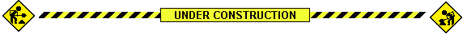

Windows Into Windows
Exhibition Site: WÔL Communicative Façade, Via Tarino 14, Torino
“Windows Into Windows” is a set of modified public domain artworks from the last millennium that each depict the view from the artist's window. These images will be bordered by a web browser window - a mediated view into our current technologically-mediated world.
All images used for this project will be in the public domain. The outside world is our shared space. The images are our shared culture. The free sharing of our culture through media is of paramount importance.
| Property | Value |
|---|---|
| Output Resolution | 96 x 135 |
| Frame Duration | ≥20 seconds per loop |
| Color Depth | ? 8-bit or indexed palette |
| Codec | ? PNG |
| Stage | Toolchain |
|---|---|
| Source Selection | Open-access museum databases (public domain only) |
| Image Processing | GIMP |
| Overlay UI Design | TBD: SVG → PNG raster pipeline; CSS mockups |
open
Windows Into Windows is part of Quartz Studio's open project.
open is a format that connects visual art, architecture, technology, and public space via the WÔL display system. Quartz Studio, a non-profit space for contemporary art founded in Turin in 2014, has created this project in collaboration with Bottega Studio Architettura (BSA) with the aim of making artworks open - accessible and usable by the public - using WÔL's unique pixel technology.
| Domain | Responsibility |
|---|---|
| Project Direction | Francesca Referza |
| Technical Validation | Bottega Studio Architetti/WÔL Operators |
| Cultural Programming | Quartz Studio |